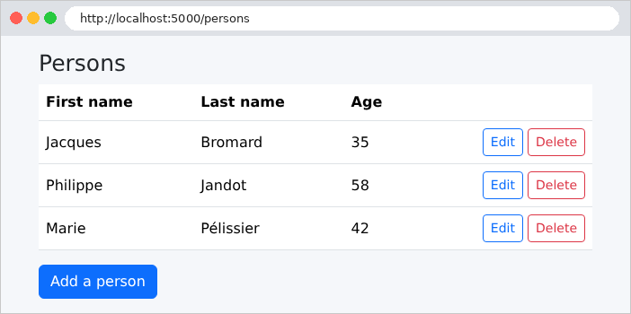

9. Arquitectura en capas y acceso a datos
Los ejemplos anteriores almacenaban sus datos en memoria. Una aplicación real los almacena en una base de datos y se organiza en capas (véase el diagrama de la introducción):
- la capa web (controladores, vistas): lee la solicitud, llama a la capa de negocio y selecciona la vista;
- la capa de negocio: reglas de negocio;
- la capa DAO ([Data Access Object]): consultas a la base de datos.
Cada capa conoce únicamente la capa inferior, y la conoce con el menor detalle posible: la capa web desconoce el SQL y la capa de negocio desconoce el HTML. Esta separación facilita comprender, probar y hacer evolucionar cada capa. El ejemplo 28 aplica esto a la gestión de una lista de personas: es, a menor escala, la gestión de los médicos y los clientes del caso de estudio.
En [Java], el acceso a la base de datos se organiza en varias capas:
- [JDBC] ([Java Database Connectivity]) es la interfaz estándar que permite a [Java] enviar comandos SQL a una base de datos. Cada SGBD proporciona un controlador (driver) [JDBC]: para [MySQL], la biblioteca [mysql-connector-j]. Abrir una conexión consume muchos recursos: [Spring Boot] utiliza un grupo de conexiones ([HikariCP]), que mantiene abiertas algunas conexiones y las presta a las solicitudes;
- [JPA] ([Jakarta Persistence API]) es el estándar de [Java] para el ORM ([Object-Relational Mapper]): asigna [Java] clases (entidades) a tablas de la base de datos y transforma las filas leídas en objetos. [JPA] es solo un estándar, compuesto por interfaces y anotaciones; el ORM que lo implementa es, en este caso, [Hibernate];
- [Spring Data JPA] se añade encima de lo anterior: basta con declarar una interfaz DAO, y [Spring Data JPA] escribe por sí mismo la implementación al iniciar la aplicación, incluidas las consultas, que deduce a partir de los nombres de los métodos.
Todo esto lo proporciona el starter [spring-boot-starter-data-jpa].
9.1. Ejemplo 28: un sistema de gestión de personal de tres capas
9.1.1. La base de datos
La base de datos [dbpersons] se crea mediante un script SQL. Con [Laragon], puede ejecutarlo, por ejemplo, en la herramienta [HeidiSQL] (menú Archivo / Ejecutar un archivo SQL), o desde la línea de comandos, en la carpeta del ejemplo:
El archivo [database/dbpersons.sql]:
- Línea 3: el script está escrito en UTF-8; así se le indica al servidor para que los acentos de los datos ([Pélissier]) permanezcan intactos;
- línea 5: el juego de caracteres [utf8mb4] acepta todos los caracteres (acentos, emojis, etc.). La intercalación [utf8mb4_unicode_ci] compara las cadenas sin distinguir entre mayúsculas y minúsculas ni acentos: para [MySQL], [pelissier] y [Pélissier] son iguales;
- línea 11: un número de versión, que se incrementa cada vez que se modifica la fila (véase «bloqueo optimista», más abajo);
- línea 17: una restricción de unicidad con nombre: la base de datos no admite dos personas con el mismo nombre y apellido. El nombre servirá para identificar el error.
9.1.2. La configuración
El archivo [pom.xml]:
- Líneas 20–23: validación de datos (véase el capítulo 3);
- líneas 25–28: [Spring Data JPA], junto con [Hibernate], [HikariCP] y la gestión de transacciones de [Spring];
- líneas 29–33: el controlador [JDBC] para [MySQL]. El alcance (scope) [runtime] indica que el código de la aplicación no lo usa directamente (solo conoce [JPA]): el controlador solo se necesita en tiempo de ejecución. También funciona con [MariaDB].
El archivo [application.properties]:
- línea 6: los mensajes de éxito se envían como atributos flash (véase el ejemplo 20), almacenados en la sesión: la cookie de sesión basta para recuperarlos, sin que se agregue el ID de sesión a la URL;
- Líneas 9–11: la conexión a la base de datos para el origen de datos ([DataSource]) que [Spring Boot] crea mediante [HikariCP]: URL [JDBC] (controlador, servidor, puerto, base de datos), nombre de usuario y contraseña. Son los valores predeterminados de [Laragon] (usuario [root], sin contraseña). No es necesario indicar el tipo de base de datos (ni su versión): [Hibernate] solicita esta información al servidor en la primera conexión y ajusta en consecuencia el SQL que genera;
- línea 13: [Hibernate] puede crear o modificar tablas a partir de las entidades; esto está prohibido ([none]): la base de datos se crea mediante el script SQL, que sirve de referencia;
- línea 15: de manera predeterminada, [Spring Boot] mantiene abierta la sesión [JPA] (y su conexión a la base de datos) hasta que la vista se genera por completo ([Open Session In View]): una vista podría entonces desencadenar consultas SQL sin que el usuario lo advierta. Este comportamiento se desactiva: todas las lecturas las realiza la capa de negocio antes de la vista. Cuando no se especifica esta propiedad, [Spring Boot] lo indica al iniciar con una advertencia ([spring.jpa.open-in-view is enabled by default...]);
- Línea 17: [true] muestra en la consola cada comando SQL enviado por [Hibernate] (véase la ejecución más abajo).
El archivo [messages.properties] contiene un mensaje de error de conversión (una edad [abc]), como en el ejemplo 19. La clase [config/WebConfig.java] sirve [Bootstrap], como en los ejemplos anteriores.
9.1.3. La entidad Person
El archivo [entities/Person.java]:
- Línea 12: [@Entity] crea una [JPA] entidad a partir de la clase [Person]: cada fila de la tabla será un objeto [Person]. Las anotaciones provienen del paquete [jakarta.persistence]: son las del estándar [JPA], no las de [Hibernate];
- línea 13: la tabla correspondiente (de manera predeterminada, sería [Person]);
- Líneas 18–21: la clave primaria ([@Id]). [@GeneratedValue(strategy = GenerationType.IDENTITY)] indica que su valor lo asigna la base de datos ([AUTO_INCREMENT]): [Hibernate] lee el valor asignado después de cada [INSERT]. El tipo [Integer], y no [int], admite el valor [null]: una persona que aún no ha sido registrada no tiene ID. [@Column] especifica el nombre de la columna correspondiente a cada campo;
- líneas 25–27: la columna de versión. [@Version] asigna el bloqueo optimista a [Hibernate]: establece la versión en 0 durante el [INSERT], la incrementa en 1 con cada [UPDATE] y agrega la condición [AND version = <value read>] en cada [UPDATE] (y en cada [DELETE]). Más adelante veremos para qué sirve;
- líneas 29–36: las demás columnas. [length] especifica el ancho de la columna: solo sería relevante si [Hibernate] creara la tabla por sí mismo, lo cual no ocurre aquí (véase [ddl-auto]);
- líneas 39–40: [JPA] requiere un constructor sin parámetros: es el que [Hibernate] utiliza para crear un objeto a partir de una fila leída, antes de completar sus campos;
- líneas 48–59: los accesores (métodos [getX] y [setX]): la entidad es un JavaBean. No existe [setId] ni [setVersion]: estos dos valores solo los escribe [Hibernate], que accede directamente a los campos.
9.1.4. La capa DAO
El archivo [dao/PersonsDao.java]:
Esta es toda la capa DAO: una interfaz, sin una sola línea de código ejecutable.
- Línea 13: la interfaz hereda de [JpaRepository<Person, Integer>] (una entidad [Person], cuya clave es un [Integer]). Al iniciar, [Spring Data JPA] crea una clase que implementa esta interfaz y la convierte en un bean, que luego se inyecta. [JpaRepository] ya proporciona los métodos estándar: [findById] (lectura por clave, resultado en un [Optional]), [findAll], [save] ([INSERT] o [UPDATE]), [saveAndFlush], [deleteById], [count]... ;
- Línea 17: una consulta derivada: [Spring Data JPA] analiza el nombre del método y deduce la consulta a partir de él. [findAll]: todas las personas; [By]: sin condiciones, ya que no sigue nada; [OrderByLastNameAscFirstNameAsc]: ordenadas por apellido y luego por nombre, en orden ascendente;
- línea 21: [findFirst]: la primera persona encontrada ([LIMIT 1]), o un [Optional] vacío; [ByFirstNameAndLastNameAndIdNot]: cuyo nombre y apellido coinciden con los proporcionados como parámetros y cuyo ID es distinto del tercer parámetro. Esto es útil al modificar una fila, que no debe entrar en conflicto consigo misma. La comparación la realiza [MySQL], y por lo tanto sigue las reglas de intercalación de la base de datos: ignora las mayúsculas y los acentos.
Un error en el nombre de un método ([findAllByOrderByLastNamee]) se detecta al iniciar: la aplicación se niega a arrancar e informa de una propiedad desconocida. Una consulta demasiado compleja para expresarse en el nombre de un método se escribe en el lenguaje [JPQL] ([Jakarta Persistence Query Language], un SQL que hace referencia a las entidades y a sus campos en lugar de a las tablas), en una anotación [@Query]: el caso de estudio utiliza algunas de ellas.
9.1.5. La capa de negocio
El archivo [business/BusinessException.java]:
Una [BusinessException] indica que una regla de negocio rechaza una operación. No es un error del programa: su mensaje está destinado al usuario. Hereda de [RuntimeException]: es una excepción no verificada que un método puede lanzar sin declararla ([throws]). Veremos que esta elección también se aplica a las transacciones.
El archivo [business/PersonData.java]:
Los datos de una persona, tal como los transmite la capa web: la capa de negocio no conoce la clase del formulario.
El archivo [business/PersonsBusiness.java]:
Comentemos este código:
- línea 18: la capa de negocio es un bean de servicio;
- línea 19: [@Transactional], asociada a la clase, se aplica a cada uno de sus métodos públicos: el método se ejecuta dentro de una transacción que se abre ([START TRANSACTION]) antes de llamarlo, se confirma ([COMMIT]) cuando retorna y se revierte ([ROLLBACK]) si lanza una excepción no verificada. Al igual que con [@PreAuthorize] (ejemplo 26), [Spring] envuelve el bean en un proxy, que abre y cierra la transacción alrededor de la llamada. Todo lo que hace el método, incluidas las llamadas al DAO, ocurre dentro de la misma transacción y en la misma conexión;
- líneas 32–35: [readOnly = true]: una transacción de solo lectura, que exime a [Hibernate] de tener que verificar al final si hay entidades modificadas;
- líneas 37–40: una persona ausente es una [BusinessException]. [orElseThrow] devuelve el contenido del [Optional], o lanza la excepción generada por la lambda si está vacío;
- líneas 42–48: la adición. Regla: no puede haber dos personas con el mismo nombre y apellido. Esto se verifica antes de escribir para mostrar un mensaje claro. Ninguna persona tiene el ID 0: [IdNot] no excluye aquí a nadie de la búsqueda;
- líneas 50–64: la actualización. Regla adicional: el bloqueo optimista (líneas 53–55). El formulario de actualización utiliza la versión de la fila tal como estaba cuando se abrió el formulario. Si ha cambiado entretanto (otro usuario ha editado la misma fila), la actualización se rechaza en lugar de sobrescribir silenciosamente el trabajo del usuario. [Objects.equals] compara dos [Integer] instancias aceptando [null];
- Línea 51: la llamada a [read] es una llamada interna dentro de la clase: no pasa por el proxy y su [readOnly] no se aplica. [read] simplemente se ejecuta dentro de la transacción de [edit];
- líneas 60–63: la entidad leída en la transacción es monitoreada por [Hibernate] (se dice que está «administrada»): basta con modificar sus campos; [Hibernate] detecta los cambios y genera un [UPDATE] para las columnas de la tabla;
- Líneas 66–70: eliminación. Primero se lee a la persona, para verificar que existe y para que el controlador pueda mencionar su nombre;
- Líneas 74–87: el registro. Normalmente, [Hibernate] envía [INSERT] y [UPDATE] a la base de datos solo al final de la transacción, en el [COMMIT], es decir, después de salir del método: aquí ya no se podría interceptar un error de la base de datos. [saveAndFlush] guarda la entidad y envía de inmediato ([flush]) los comandos SQL pendientes;
- Líneas 77–79: la verificación de versión mencionada anteriormente no siempre es suficiente: dos usuarios pueden guardar la misma fila al mismo tiempo, y ambos superan la verificación. El [UPDATE ... WHERE id = ? AND version = ?] del segundo usuario entonces no modifica ninguna fila; [Hibernate] lo detecta y [Spring] lanza una [ObjectOptimisticLockingFailureException], que se convierte en la misma [BusinessException];
- líneas 80–85: de manera similar, dos adiciones simultáneas de la misma persona superan la verificación de homónimos, pero la restricción de unicidad de la base de datos no permite que ambas sean aceptadas. [Spring] traduce las excepciones de las distintas bases de datos y de los distintos ORM a una jerarquía común de excepciones: una violación de restricción se convierte en una [DataIntegrityViolationException]. [getMostSpecificCause()] devuelve la excepción original, la del controlador de [MySQL], cuyo mensaje especifica el nombre de la restricción ([Duplicate entry '...' for key 'unq_persons_first_name_last_name']). Cualquier otra violación de restricción se propaga (línea 85): es una anomalía.
En todos los casos en que una excepción sale de un método de [PersonsBusiness] (incluida [BusinessException], ya que hereda de [RuntimeException]), el proxy revierte la transacción: ninguna de las acciones del método se conserva. Nota: de manera predeterminada, una excepción verificada (que hereda de [Exception] sin heredar de [RuntimeException]) no provoca una reversión.
Verificamos este último caso enviando 30 solicitudes para agregar a la misma persona al mismo tiempo: solo una fue aceptada; en las demás, la base de datos rechazó el [INSERT] (error [MySQL] n.º 1062, que [Hibernate] informa en la consola como una advertencia [HHH000247]), y el usuario recibió el mensaje de «homónimo», no un error 500.
9.1.6. La capa web
El archivo [models/PersonForm.java]:
El formulario y sus restricciones de validación (véase el ejemplo 19), con la versión de la fila (línea 26) transmitida mediante un campo oculto. La edad es un [Integer] y no un [int]: un campo vacío produce [null], lo cual se señala mediante [@NotNull].
El archivo [controllers/PersonsController.java]:
1 2 3 4 5 6 7 8 9 10 11 12 13 14 15 16 17 18 19 20 21 22 23 24 25 26 27 28 29 30 31 32 33 34 35 36 37 38 39 40 41 42 43 44 45 46 47 48 49 50 51 52 53 54 55 56 57 58 59 60 61 62 63 64 65 66 67 68 69 70 71 72 73 74 75 76 77 78 79 80 81 82 83 84 85 86 87 88 89 90 91 92 93 94 95 96 97 98 99 100 101 102 103 104 105 106 107 108 109 110 111 112 113 114 115 116 117 118 119 120 121 122 123 | |
Analicemos este código:
- líneas 26–30: el controlador solo conoce la capa de negocio;
- líneas 33–36: a las cadenas recibidas se les eliminan los espacios iniciales y finales, y una cadena vacía se convierte en [null] (véase el ejemplo 19);
- líneas 38–41: la raíz del sitio redirige a la lista;
- líneas 54–68: la adición, en tres pasos: validación del formulario (errores: se vuelve a cargar), llamada a la capa de negocio (éxito: mensaje flash y redirección; véase el ejemplo 20), [BusinessException] (se vuelve a cargar con el mensaje al pie de la página). Cualquier otra excepción no se captura: es una anomalía que dará lugar a un error 500;
- Línea 70: [{id:\\d+}]: una variable de ruta restringida por una expresión regular (véase el ejemplo 02): [\d+] designa una secuencia de dígitos (la barra invertida se duplica en la cadena [Java]). [/persons/abc/edit] no corresponde a ninguna acción: error 404;
- líneas 70–84: el formulario de actualización, rellenado previamente con la fila leída de la base de datos, incluida su versión;
- líneas 86–101: misma estructura que la adición; la versión devuelta por el formulario se transmite a la capa de negocio;
- líneas 103–113: eliminación. No hay formulario que volver a mostrar: los errores también se transmiten mediante el atributo flash;
- líneas 116–122: la plantilla de vista del formulario, utilizada tanto para agregar como para modificar filas: título y dirección de envío distintos, valores del formulario y error de la capa de negocio.
El archivo [templates/persons/form.html]:
- Línea 6: [th:object] identifica el objeto del formulario; [th:action] recibe la dirección de envío proporcionada por el controlador;
- línea 8: el campo oculto que transporta la versión de la fila: [th:field="*{version}"] genera sus atributos [name] y [value] (véase el ejemplo 19);
- Líneas 9–11: los tres campos generados por el fragmento [field] del ejemplo 19.
El archivo [templates/layout.html]:
- línea 12: el mensaje de éxito, en la parte superior de la página;
- línea 15: el mensaje de error al pie de la página: ya sea el de la solicitud actual (colocado en la plantilla por [form]) o el almacenado como atributo flash antes de una redirección. En ambos casos, es un atributo [error] de la plantilla de vista;
- líneas 17–18: la ventana de confirmación y su script (véase el ejemplo 21).
La vista [persons/list.html] tiene la misma estructura que la lista de contactos del ejemplo 21: para cada persona, un enlace al formulario de edición y un formulario de eliminación POST, cuyo envío se confirma. El fragmento [fragments/field.html] es el mismo que en el ejemplo 19, mientras que la ventana [fragments/confirmation.html] y el script [static/js/app.js] son los mismos que en el ejemplo 21, sin cambios.
9.1.7. Ejecución
Si los valores de [application.properties] no son adecuados (una contraseña para [root], por ejemplo), se pueden reemplazar, sin modificar el archivo, con variables de entorno: el nombre de la propiedad se escribe en mayúsculas, con los puntos reemplazados por guiones bajos. En [Windows] ([PowerShell]):
Al iniciar, con [MariaDB], [Hibernate] muestra una advertencia:
Esto no tiene consecuencias: [MariaDB] se presenta ante el controlador de [MySQL] con el número de versión «5.5.5», que [Hibernate] interpreta como un [MySQL] muy antiguo. Con [MySQL] 8, no aparece.
La lista, en la URLhttp://localhost:5000/:

Un formulario no válido:

Un homónimo: la regla de negocio lo detecta. [MySQL], al comparar con la intercalación de la base de datos, también rechaza [marie pelissier], escrito en minúsculas y sin acentos. Aquí, la entrada [Marie Pélissier]:

Una adición exitosa:

Con [spring.jpa.show-sql=true] en [application.properties] (o, sin modificar el archivo, [../mvnw spring-boot:run -Dspring-boot.run.arguments=--spring.jpa.show-sql=true]), la consola muestra cada comando SQL enviado por [Hibernate]. Para agregar a una persona y luego mostrar la lista tras la redirección:
Aquí se observa la búsqueda de un homónimo (la consulta derivada del nombre [findFirstByFirstNameAndLastNameAndIdNot]), el [INSERT] y luego la lectura de la lista ([findAllByOrderByLastNameAscFirstNameAsc]). Los valores se transmiten por separado como parámetros (los [?]): esto es lo que protege contra las inyecciones SQL. Los comandos de transacción ([START TRANSACTION], [COMMIT]) no se muestran. Para modificar una fila:
[UPDATE] escribe la nueva versión y verifica la anterior ([where id=? and version=?]): este es el bloqueo optimista. Y para una eliminación:
[deleteById] no volvió a leer la fila: ya estaba siendo monitoreada en la transacción desde la llamada a [read].
El bloqueo optimista: dos formularios están abiertos sobre la misma fila; el primero se guarda (la versión pasa de 0 a 1); el segundo, que todavía tiene la versión 0, es rechazado:

Eliminación, con confirmación: